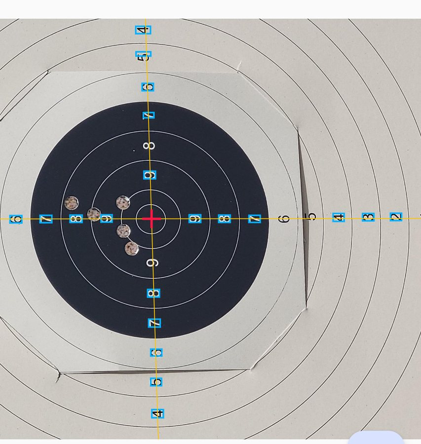
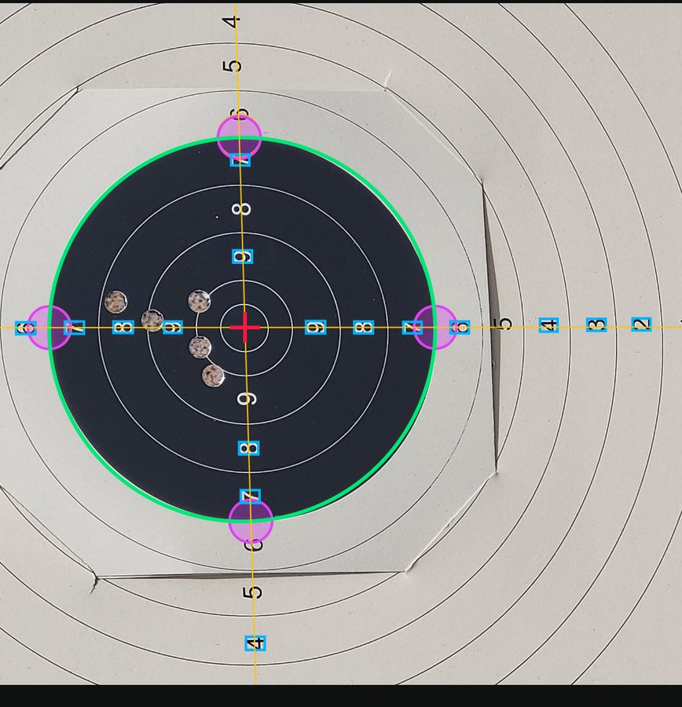

KOTLIN MULTIPLATFORM · 2026
Markera
One photo of a paper target. One scored series. Scroll.
01 — THE APP
Point, shoot, score
Take a photo; holes are found, rings measured and the series scored — all on the phone.
02 — THE CENTRE
Read the digits
The printed ring numbers form two rows. Where they cross is the true centre, however the camera tilted.

03 — THE RIM
Four probes
Four disks walk to the rim where the digits say it must be. An ellipse through them undoes the perspective.

GET IT